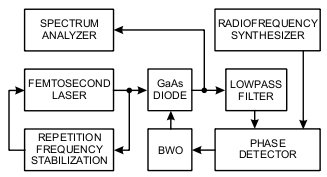
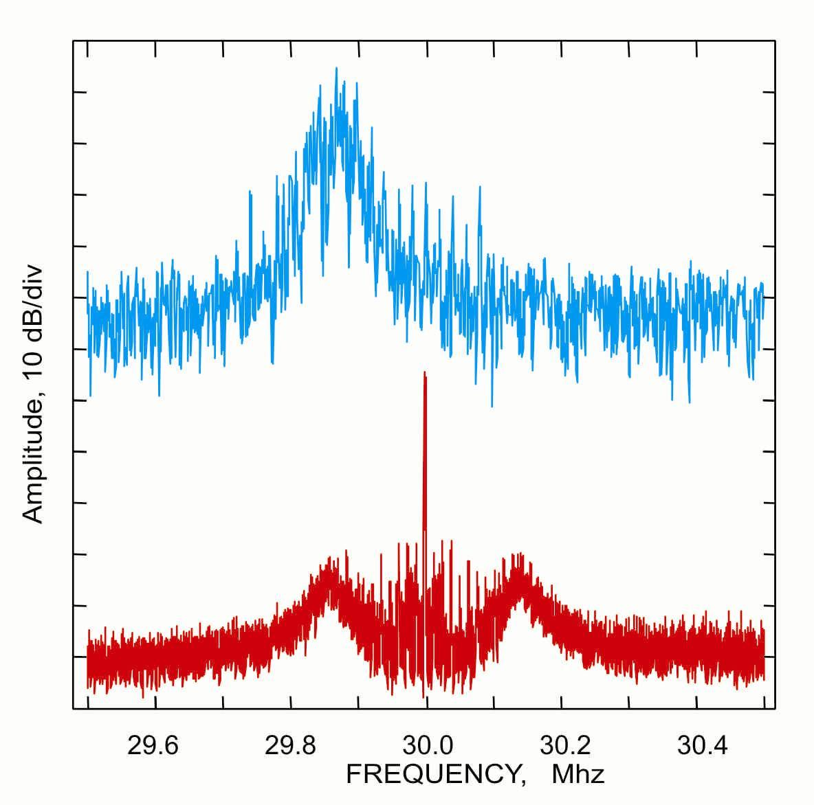
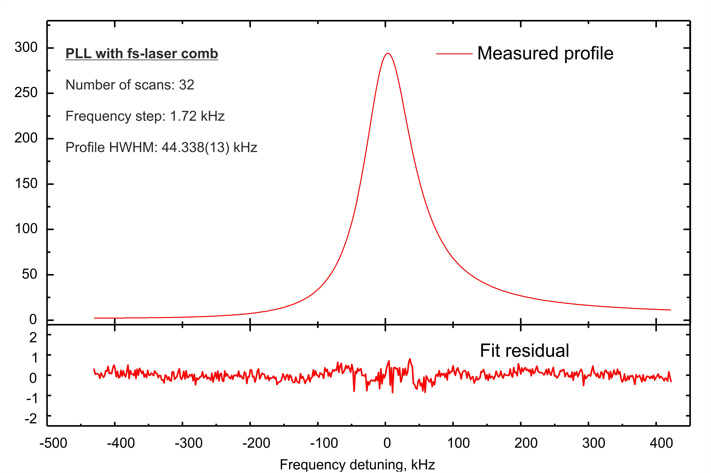

Instruments Subterahertz radiation source stabilized by laser comb Subterahertz radiation source stabilized by laser comb
Frequency stabilization of primary radiation source by femtosecond laser induced comb
Our Laboratory succeeded in pioneer work on phase stabilization of the frequency of a primary subterahertz radiation source against equidistant components of a broad-band spectrum generated by a femtosecond laser. Optics-terahertz conversion of the laser comb and its mixing with a subterahertz radiation is performed at Schottky diode. The work opens up a possibility of developing a principally new generation of frequency synthesizers with user-required power and having phase noise level thousands times lower than in traditional analogs.

Block-diagram of experimental setup (See photo here).

Radiation spectrum of BWO recorded at intermediate frequency at free-running (upper trace)
and stabilized against a component of terahertz frequency comb (lower trace).
For more details see [Ref. 2 (2010)].

Narrow line recording example with use of the new radiation source (See Ref. 5 (2014) for details)
|